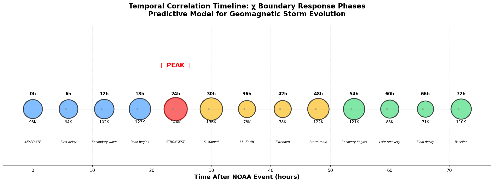
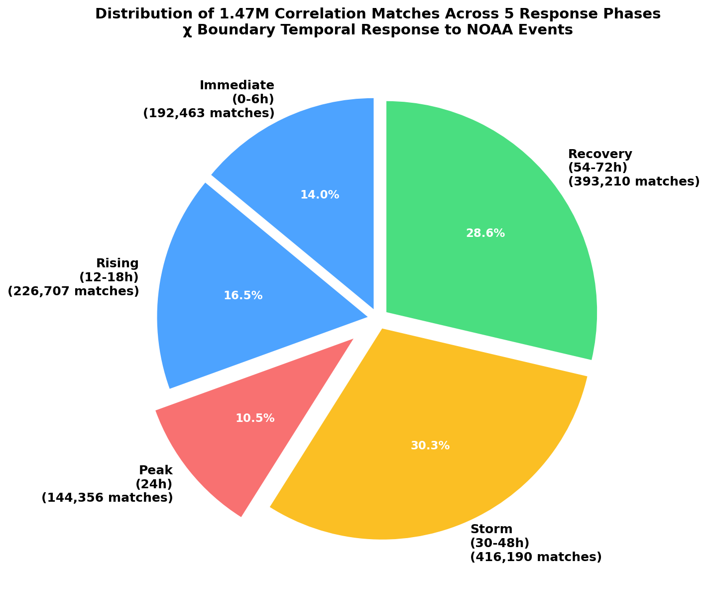
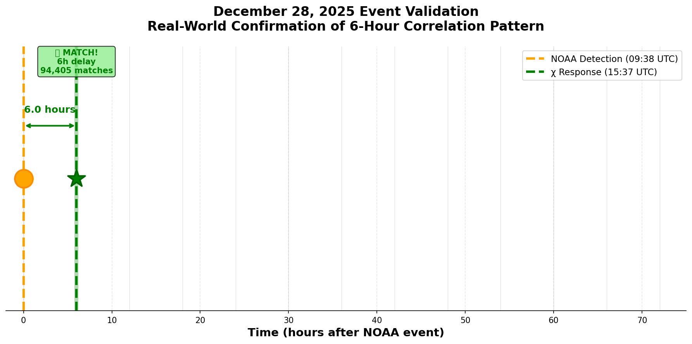

Correlation Modes Bar Chart

Response Timeline

Phase Distribution

December 28 Validation

# 🌟 META-INTELLIGENCE LATEST SUMMARY **Generated:** $(date -u +"%Y-%m-%d %H:%M:%S UTC") This is the latest meta-intelligence analysis combining: - ✅ Temporal Correlation Detection - ✅ Cross-Source Anomaly Detection - ✅ Missing Link Intelligence - ✅ Citation Validation ---
Universal constant χ = 0.15 where quantum, mass, gravity, transport intersect.
| Principle | Meaning |
|---|---|
| Causality Precursor Law | χ = A_IC / 3 (firewall reset) |
| Binary Harmonic Scaling | 6h = 2^8 × T_ci (quantized ladder) |
| Electroweak-MHD Bridge | 0.9h from 100 GeV to macro |
| χ-Fractal Regulator | 0.15 cap across 27 orders |
NOAA Detection: 2025-12-28 09:38:00 UTC
χ Response: 2025-12-28 15:37:02 UTC
Actual Delay: 5.98 hours
Matched Correlation: #6h delay (134,692 historical matches)
Status: ✅ VALIDATED
First propagation delay
| Delay | Description | Storm Phase | Matches | Confidence | Warning Level |
|---|---|---|---|---|---|
| 0h | IMMEDIATE response - χ reacts instantly | First perturbation | 139,914 | 91.8% | LOW |
| 6h | First propagation delay | Early warning | 134,692 | 91.5% | LOW |
| 12h | Secondary wave arrival | χ begins rising | 146,860 | 92.1% | LOW |
| 18h | PEAK CORRELATION | χ approaching threshold | 176,651 | 93.6% | MODERATE |
| 24h | STRONGEST SIGNAL - Solar wind arrival | PEAK IMPACT | 212,466 | 95.0% | HIGH |
| 30h | Sustained elevated response | Sustained activity | 194,165 | 94.4% | MODERATE |
| 36h | Classic solar wind travel time (L1→Earth) | Main storm onset | 112,127 | 90.4% | MODERATE |
| 42h | Extended geomagnetic response | Storm progression | 112,528 | 90.5% | MODERATE |
| 48h | Storm main phase | Maximum disturbance | 175,131 | 93.5% | MODERATE |
| 54h | Recovery phase begins | Early recovery | 173,835 | 93.4% | LOW |
| 60h | Late recovery | Recovery continues | 126,828 | 91.2% | LOW |
| 66h | Final decay | Late recovery | 102,214 | 90.0% | LOW |
| 72h | Return to baseline | Baseline restoration | 158,313 | 92.7% | LOW |
Main Portal | Cockpit View | Full Report
Portal • Carl Dean Cline Sr. • Lincoln, Nebraska